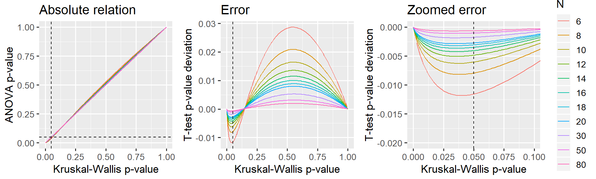

This document presents the close relationship between the Kruskal-Wallis test and one-way ANOVAs. Namely, that Kruskal-Wallis test is, to a close approximation, just a one-way ANOVA on \(rank\)ed \(y\). It is an appendix to the post “Common statistical tests as linear models”.
TL;DR: Below, I argue that this approximation is good enough when the sample size is 12 or greater and virtually perfect when the sample size is 30 or greater.
Calculate statistics for different sample sizes (\(N\)) and differences between groups (\(mu\)).
library(tidyverse)
# Parameters
Ns = c(seq(from=6, to=20, by=2), 30, 50, 80)
mus = c(0, 0.5, 1) # Means
PERMUTATIONS = 1:200
# Run it
D = expand.grid(set=PERMUTATIONS, mu=mus, N=Ns) %>%
mutate(
# Generate data. One normal and one weird
value = map2(N, mu, ~c(rnorm(.x), rnorm(.x) + .y, rnorm(.x))),
group = map(N, ~factor(c(rep('A', .x), rep('B', .x), rep('C', .x)))),
# Tests
kruskal_raw = map2(value, group, ~ kruskal.test(.x ~ .y)),
anova_raw = map2(value, group, ~aov(rank(.x) ~ .y)),
# Tidy it up
kruskal = map(kruskal_raw, broom::tidy),
anova = map(anova_raw, broom::glance)
) %>%
# Get as columns instead of lists; then remove "old" columns
unnest(kruskal, anova, .sep='_') %>%
select(-value, -group, -kruskal_raw, -anova_raw)
head(D)I have found that the effect size (\(mu\)) makes no difference, so I collapse the analyses below across \(mu\).
D$N = factor(D$N) # Make N a factor for prettier plotting
library(ggplot2)
library(patchwork)
# A straight-up comparison of the p-values
p_relative = ggplot(D, aes(x=kruskal_p.value, y=anova_p.value, color=N)) +
geom_line() +
geom_vline(xintercept=0.05, lty=2) +
geom_hline(yintercept=0.05, lty=2) +
labs(title='Absolute relation', x = 'Kruskal-Wallis p-value', y = 'ANOVA p-value') +
#coord_cartesian(xlim=c(0, 0.10), ylim=c(0, 0.11)) +
theme_gray(13) +
guides(color=FALSE)
# Looking at the difference (error) between p-values
p_error_all = ggplot(D, aes(x=kruskal_p.value, y=anova_p.value-kruskal_p.value, color=N)) +
geom_line() +
geom_vline(xintercept=0.05, lty=2) +
labs(title='Error', x = 'Kruskal-Wallis p-value', y = 'T-test p-value deviation') +
theme_gray(13) +
guides(color=FALSE)
# Same, but zoomed in around p=0.05
p_error_zoom = ggplot(D, aes(x=kruskal_p.value, y=anova_p.value-kruskal_p.value, color=N)) +
geom_line() +
geom_vline(xintercept=0.05, lty=2) +
labs(title='Zoomed error', x = 'Kruskal-Wallis p-value', y = 'T-test p-value deviation') +
coord_cartesian(xlim=c(0, 0.10), ylim=c(-0.020, 0.000)) +
theme_gray(13)
# Show it. Patchwork is your friend!
p_relative + p_error_all + p_error_zoom
Reasonably accurate when N = 12 or greater. Almost exact when N = 30.